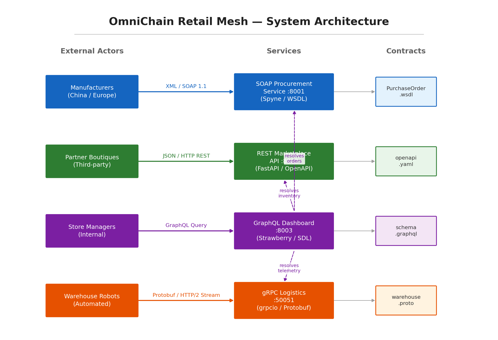
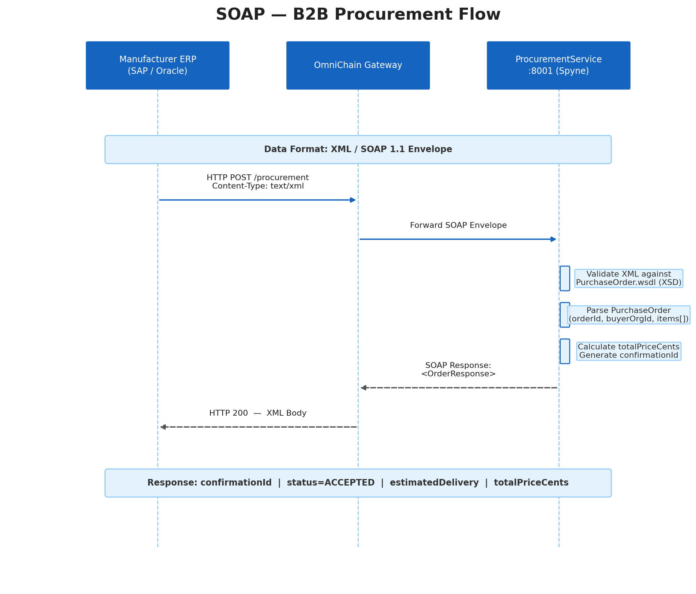
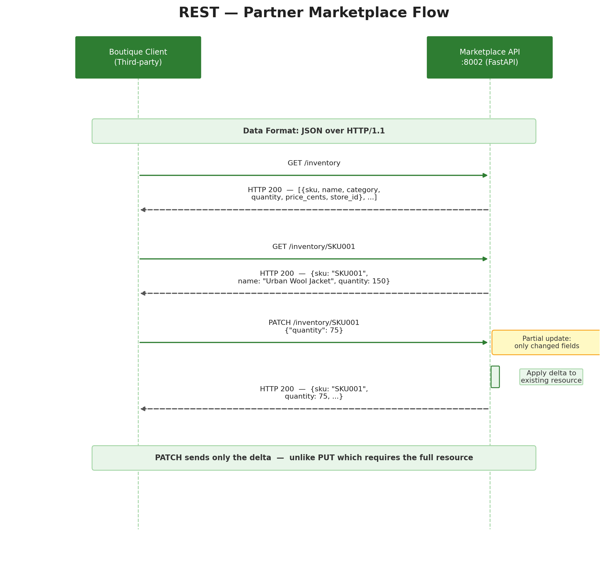
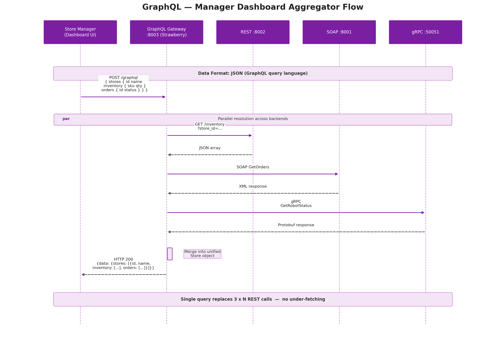
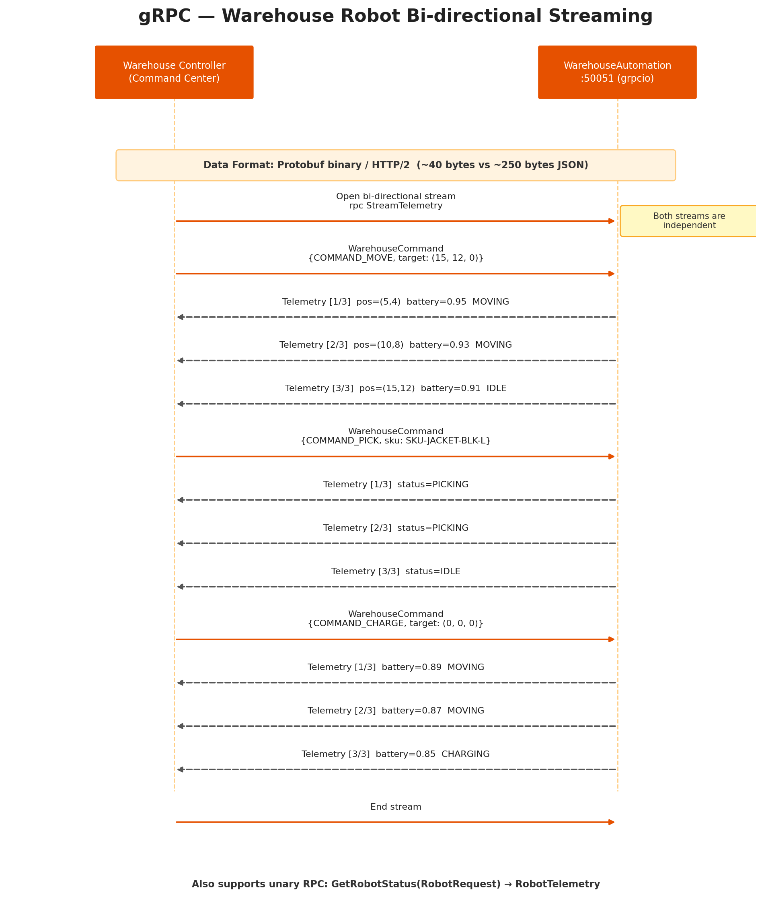
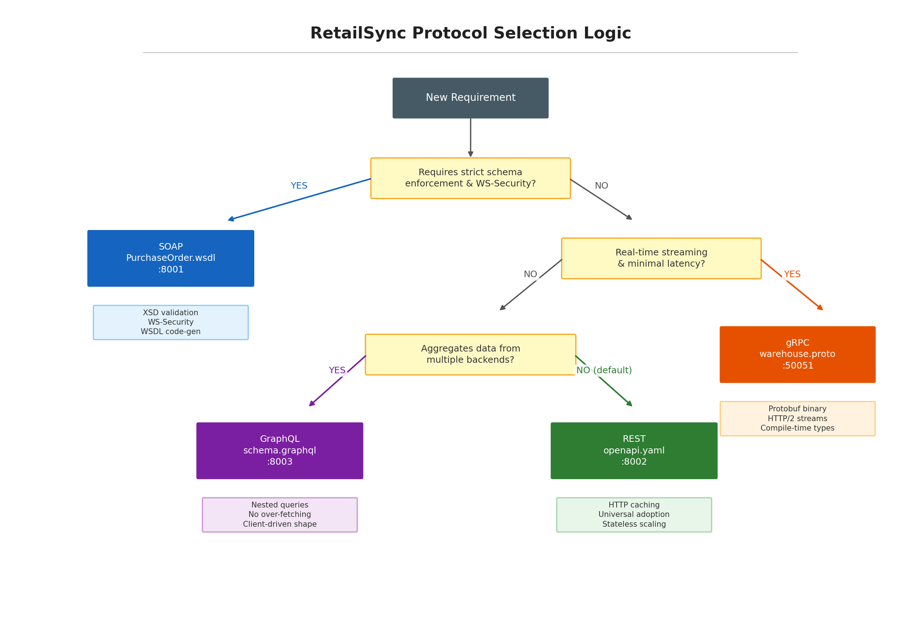
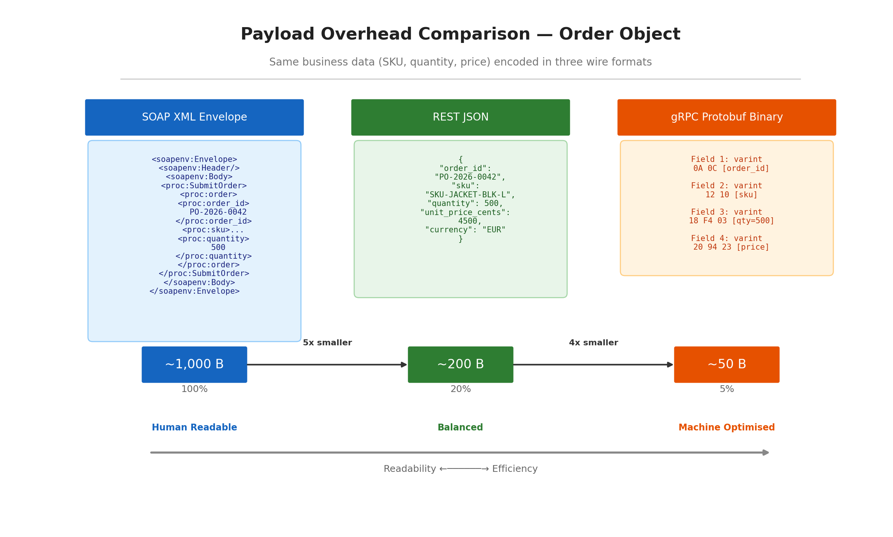
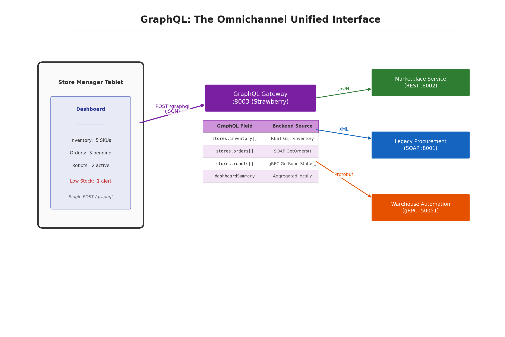

RetailSync
A Comparative Architectural Study of SOAP, REST, GraphQL, and gRPC
SOAP
REST
GraphQL
gRPC
Service-Oriented Computing Module — February 2026
Welcome. Today we present RetailSync — a proof-of-concept that implements four distinct API paradigms within a single retail supply chain. The goal is NOT to declare a winner, but to demonstrate that each paradigm excels in a specific context.
Agenda
01 Context & Motivation — Why four paradigms in one system?2 min 02 System Architecture — Master diagram & data flows3 min 03 Deep Dive — Each module: contract, flow, trade-offs8 min 04 Cross-Paradigm Analysis — Decision tree, payload, aggregation3 min 05 Comparison Matrix & Takeaways 2 min
Here is our plan for the next 18 minutes. We'll start with context, show the big picture, then deep-dive into each module before comparing them side by side.
01
Context & Motivation
Why four paradigms in one system?
The Retail Problem
A global retail brand must communicate with four fundamentally different stakeholders , each with distinct technical constraints:
Manufacturers (China/Europe)
Legacy ERP systems (SAP, Oracle) that speak SOAP/XML natively. Cannot impose REST.
Partner Boutiques
Third-party developers need the simplest possible integration. HTTP + JSON, no SDK.
Store Managers
Internal dashboards aggregating inventory, orders, and robot telemetry in one view.
Warehouse Robots
100+ robots streaming telemetry at 10 msg/sec. Bandwidth and latency are critical.
No single paradigm optimally serves all four. The architecture must be polyglot by design.
The key insight here is that each stakeholder has fundamentally different constraints. A manufacturer with SAP cannot adopt GraphQL. A boutique developer doesn't want to deal with Protobuf compilation. A dashboard that queries three services individually would suffer from the N+1 problem. And warehouse robots need sub-50-byte binary payloads, not verbose XML. The architecture must speak the right language for each audience.
Our Approach: Contract-First
Every module follows a contract-first methodology:
1. Define the Contract
WSDL, OpenAPI, GraphQL SDL, or Protobuf — written before any code
2. Implement the Mock
Server returns realistic data conforming to the contract
3. Validate with Tests
Postman collection + automated assertions for each endpoint
4. Analyse Trade-offs
What did we gain? What did we sacrifice? Why here?
Our methodology is contract-first. We write the contract — whether that's a WSDL, an OpenAPI spec, a GraphQL schema, or a Protobuf IDL — before implementing any server code. This mirrors how real distributed teams work: the contract is the shared truth.
02
System Architecture
Master diagram & data flows
RetailSync — System Architecture

Four services, four protocols, one retail ecosystem. The GraphQL layer acts as an aggregation gateway.
This is the big picture. On the left, our four actor types. In the center, our four services — each speaking a different protocol on a different port. On the right, the contract files that serve as the single source of truth. Notice the dashed purple arrows: the GraphQL dashboard resolves fields from the other three services. It doesn't own any data — it's purely an aggregator.
03
Deep Dive
Contract → Flow → Trade-offs for each module
SOAP B2B Procurement — :8001
Contract
PurchaseOrder.wsdl — XSD-embedded schema with strict type enforcement
Implemented with Spyne (Python SOAP framework)
Why SOAP Here?
XSD validation at the wire level — no ambiguous JSONWSDL code generation — both parties generate stubs from one fileWS-Security — message-level encryption for cross-border POs

For procurement, SOAP is not a legacy choice — it's the right tool. Manufacturers run ERP systems that speak SOAP natively. The WSDL is our machine-readable Service Level Agreement: if a message passes XSD validation, both parties can trust its structure. Unlike JSON, XML Schema enforces field ordering, occurrence constraints, and nested types at the wire level.
SOAP Trade-offs & Insight✓ Strict type safety (XSD) ⇄ ✗ Human readability (XML verbose)
✓ Formal contract (WSDL) ⇄ ✗ Simplicity (heavy toolkits)
✓ WS-Security (message-level) ⇄ ✗ Performance (XML parsing slow)
SOAP's rigidity is deliberate. In B2B procurement, the cost of a malformed purchase order (incorrect quantities, missing manufacturer IDs) far exceeds the cost of XML verbosity. The WSDL acts as a machine-readable SLA.
The key trade-off is verbosity vs safety. We sacrifice human readability and parsing speed, but we gain compile-time guarantees that every order has exactly the right fields. In procurement, a single malformed order can cost thousands of euros. This is why SOAP persists in banking, healthcare, and manufacturing.
REST Partner Marketplace — :8002
Contract
openapi.yaml — OpenAPI 3.0 specification
Implemented with FastAPI + Pydantic models
Why REST Here?
Zero integration barrier — any HTTP client, any languageHTTP caching — CDNs cache GET responses transparentlySemantic verbs — GET/PATCH/DELETE are self-documenting

For the partner marketplace, REST wins on simplicity. A boutique developer can integrate using curl in minutes. Notice we use PATCH, not PUT — PATCH sends only the changed fields, reducing bandwidth and eliminating accidental overwrites from stale client state.
REST Trade-offs & Insight✓ Universal adoption & simplicity ⇄ ✗ No built-in schema enforcement
✓ HTTP caching at CDN/proxy level ⇄ ✗ Multiple round-trips (under-fetching)
✓ Stateless horizontal scaling ⇄ ✗ No native streaming
PATCH vs PUT: with 10,000 boutiques updating stock per minute, the bandwidth difference between full-resource PUT and single-field PATCH is substantial. PATCH sends only the delta.
The critical architectural choice here is PATCH over PUT. PUT requires sending the full resource representation — meaning a boutique updating stock after a single sale would re-transmit every field. PATCH sends only the delta. At scale, this difference matters.
GraphQL Manager Dashboard — :8003
Contract
schema.graphql — SDL with Store, Inventory, Order, Telemetry types
Implemented with Strawberry + FastAPI
Why GraphQL Here?
Single query replaces 3 × N REST callsClient-driven shape — each widget requests only what it needsAggregator pattern — frontend ignores backend topology

GraphQL solves the N+1 problem. Without it, the dashboard would need separate calls to /stores, /stores/id/inventory, /stores/id/orders for each store. GraphQL collapses this into a single POST. Notice the parallel resolution: the gateway fans out to REST, SOAP, and gRPC simultaneously, then merges the results into one unified response.
GraphQL Trade-offs & Insight✓ Single request for nested data ⇄ ✗ No HTTP caching (POST-based)
✓ Client-controlled response shape ⇄ ✗ Query complexity analysis needed
✓ Backend-agnostic aggregation ⇄ ✗ Higher server-side complexity
GraphQL is not a replacement for REST — it's a complementary layer. Our GraphQL service owns no data. It acts as an aggregator that fans out to REST, SOAP, and gRPC. Both APIs coexist: boutiques use REST directly, managers use GraphQL.
The key personal analysis here: GraphQL and REST coexist by design. We don't force everyone through GraphQL. Boutiques benefit from REST's caching and simplicity. Managers benefit from GraphQL's aggregation. Attempting to serve both through a single paradigm would degrade both experiences.
gRPC Warehouse Logistics — :50051
Contract
warehouse.proto — Protocol Buffers IDL with message & service definitions
Implemented with grpcio + protobuf
Why gRPC Here?
~50B Protobuf vs ~1KB XML — 20x bandwidth reductionBi-directional streaming — commands and telemetry on one connectionCompile-time types — field errors caught before deployment

For warehouse automation, every byte counts. Protobuf encodes a telemetry message in about 50 bytes versus 1 kilobyte for the SOAP equivalent. But gRPC is not just about compression — it's about the streaming model. Both streams are independent: the controller pushes commands, and the robot pushes telemetry, simultaneously, on a single HTTP/2 connection.
gRPC Trade-offs & Insight✓ Binary efficiency (20x smaller) ⇄ ✗ Cannot inspect with curl
✓ Bi-directional streaming ⇄ ✗ No browser support (needs gRPC-Web)
✓ Compile-time type safety ⇄ ✗ Smaller ecosystem than REST
Streaming vs polling: in a unary model, 100 robots × 2 RPCs = 200 connections with polling delays. Bi-directional streaming gives sub-second reaction time — the difference between a robot colliding with an obstacle or stopping in time.
The personal analysis: the choice here is not just about throughput but about control latency. With polling, there's always a delay between when the controller decides to reroute a robot and when the command actually arrives. With streaming, the command arrives instantly. In a warehouse where robots move at speed, this latency determines safety.
04
Cross-Paradigm Analysis
Decision logic, payload comparison, aggregation pattern
Protocol Selection Logic

REST is the default. We deviate only when a requirement explicitly demands it.
This decision tree summarises our architectural reasoning. We start with REST as the default — it's the simplest, most widely adopted paradigm. We only deviate when a concrete constraint forces it: strict schemas demand SOAP, streaming demands gRPC, aggregation demands GraphQL. Every non-REST choice is justified by a specific limitation of REST, not by novelty.
Payload Overhead Comparison

Same order object: 1 KB (SOAP) → 200 B (REST) → 50 B (gRPC). 20× reduction.
This is the same business data — an order with SKU, quantity, and price — encoded in three different formats. SOAP wraps it in an envelope with namespaces for about 1 kilobyte. JSON strips the namespaces down to 200 bytes. Protobuf uses varint encoding and field tags for just 50 bytes. At 100 robots at 10 messages per second, this is the difference between saturating a warehouse network and barely using it.
GraphQL Aggregator Pattern

The frontend sees one typed schema. The backend heterogeneity is invisible.
This diagram shows the architectural power of GraphQL as an aggregator. The Store Manager Tablet sends a single POST /graphql request. The gateway maps each field to a different backend: inventory from REST, orders from SOAP, telemetry from gRPC. The frontend developer has no idea which backend uses which protocol — they only see a unified, typed schema. If we later migrate orders from SOAP to REST, the frontend changes zero lines of code.
05
Comparison Matrix & Takeaways
Final side-by-side analysis
Final Comparison Matrix
Criterion
SOAP
REST
GraphQL
gRPC
Data Format XML JSON JSON Protobuf (binary) Transport HTTP/1.1 HTTP/1.1 HTTP/1.1 HTTP/2 Contract WSDL (mandatory) OpenAPI (optional) SDL Schema .proto (mandatory) Typing Strict (XSD) Runtime (Pydantic) Runtime (resolvers) Compile-time (codegen) Streaming No No Subscriptions Native bi-directional Caching No Yes (HTTP GET) No (POST-based) No Browser Support Via AJAX Native Native gRPC-Web proxy Best For Formal B2B Public/partner APIs Aggregation gateways Machine-to-machine Our Port :8001 :8002 :8003 :50051
This is the side-by-side summary. Notice there is no universally best paradigm — each cell represents a design decision with consequences. REST caches but can't stream. gRPC streams but can't be called from a browser. GraphQL aggregates but loses HTTP caching. SOAP enforces schemas but is verbose. The art is matching the paradigm to the constraint.
Key Takeaways
1. No Universal Winner
Each paradigm excels in its niche. The architecture must be polyglot.
2. Contract-First is Essential
WSDL, OpenAPI, SDL, Protobuf — the contract is the shared truth between teams.
3. REST as Default, Deviate with Reason
Every non-REST choice must be justified by a concrete constraint that REST cannot satisfy.
4. GraphQL as Glue, Not Replacement
GraphQL aggregates heterogeneous backends without replacing them. Both REST and GraphQL coexist.
The mark of architectural maturity is not knowing the latest framework — it is knowing when NOT to use it.
If there is one thing to remember from this presentation: the mark of architectural maturity is not knowing the latest framework. It's knowing when NOT to use it. Every technology we didn't choose for a given module is just as important as the one we did choose — because the rejection is justified by concrete trade-offs, not by preference.
Thank You
Questions?
SOAP :8001
REST :8002
GraphQL :8003
gRPC :50051
GitHub: github.com/AyaMor/omnichain-retail-mesh
Thank you for your attention. We're now happy to take your questions. We can demonstrate any of the four services live, show the Postman collection, or dive deeper into any trade-off or architectural decision.